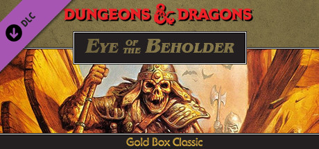

"Die Legende von Drizzt" erzählt von den außergewöhnlichen Abenteuern von Drizzt Do'Urden, einem Dunkelelf im Dungeons-&-Dragons-Universum. Geschaffen von Autor R.A. Salvatore, erforscht die Serie Drizzts Kampf mit seiner Identität und Moral, während er sich durch die tückische Unterwelt und die Oberflächenwelt bewegt. Bekannt für seine außergewöhnlichen Kampffertigkeiten und seinen unerschütterlichen moralischen Kompass, wird Drizzt zu einem ikonischen Helden, der die Stereotypen seiner Drow-Herkunft herausfordert. Die Serie, beginnend mit "Der Kristallsplitter", vereint aufregende Action, komplexe Weltgestaltung und tiefgreifende Charakterentwicklung und wird so zu einem beliebten und dauerhaften Teil der Dungeons-&-Dragons-Literatur.
"The Legend of Drizzt" follows the extraordinary adventures of Drizzt Do'Urden, a dark elf in the Dungeons & Dragons universe. Created by author R.A. Salvatore, the series explores Drizzt's struggles with his identity and morality as he navigates the treacherous Underdark and the surface world. Renowned for his exceptional combat skills and unwavering moral compass, Drizzt becomes an iconic hero, challenging the stereotypes associated with his drow heritage. The series, beginning with "The Crystal Shard," combines thrilling action, intricate world-building, and profound character development, making it a beloved and enduring part of Dungeons & Dragons literature.
Ed Greenwood & Co.
"Dark perils and great deeds await.
Welcome to Faerûn, a land of high magic, terrifying monsters, ancient ruins, and hidden wonders. From the forbidding forests of the Silver Marches to the teeming cities of the Inner Sea, Faerûn encompasses shining kingdoms, monster-infested wastes, endless caverns, and sinister citadels. TheForgotten Realms Campaign Setting presents the most comprehensive fantasy world ever described!
This book contains all the details you need to play Dungeons & Dragons adventures in the Forgotten Realms setting:
A new full-color poster map of Faerûn.
Dozens of new races, feats, and prestige classes for your characters.
The Faerûnian pantheon, including over 100 deities and powers.
Highly detailed regions, new monsters, mysterious sites, and two short adventures to begin your campaign.
The Forgotten Realms Campaign Setting is fully updated and redesigned for the new edition of the D&D game. To make full use of this book, you also need the Player's Handbook, the Dungeon Master's Guide, and the Monster Manual.
Westwood Studios

A new evil is plaguing the city of Waterdeep, stalking the streets and preying on its citizens. Though initially thought to come from afar, this great evil, known only as Xanathar, instead resides within Waterdeep and, if not stopped, threatens to overwhelm the city. The Lords of Waterdeep believe that the evil lurks in the sewers below and have commissioned a party of adventurers to investigate and foil this nefarious plot. Granted full rights of marque and ownership of any treasure, artifacts or valuables you find on your quest, you must venture into the chasms, discover the nature of this evil and destroy it by any means necessary.
Autor
Cover
Zusammenfassung
R.A. Salvatore
"Die Sage von Drizzt" erzählt von den außergewöhnlichen Abenteuern von Drizzt Do'Urden, einem Dunkelelf im Dungeons-&-Dragons-Universum. Geschaffen von Autor R.A. Salvatore, erforscht die Serie Drizzts Kampf mit seiner Identität und Moral, während er sich durch die tückische Unterwelt und die Oberflächenwelt bewegt. Bekannt für seine außergewöhnlichen Kampffertigkeiten und seinen unerschütterlichen moralischen Kompass, wird Drizzt zu einem ikonischen Helden, der die Stereotypen seiner Drow-Herkunft herausfordert. Die Serie, beginnend mit "Der Kristallsplitter", vereint aufregende Action, komplexe Weltgestaltung und tiefgreifende Charakterentwicklung und wird so zu einem beliebten und dauerhaften Teil der Dungeons-&-Dragons-Literatur.
Ed Greenwood & Co.
"Dunkle Gefahren und große Taten erwarten dich.
Willkommen in Faerûn, einem Land voller hoher Magie, furchterregender Monster, alter Ruinen und verborgener Wunder. Von den unheilvollen Wäldern der Silbermärkte bis zu den quirligen Städten des Inneren Meeres umfasst Faerûn strahlende Königreiche, von Monstern verseuchte Einöden, endlose Höhlen und finstere Zitadellen. Das Kampagnenbuch „Die Vergessenen Reiche“ präsentiert die umfassendste Fantasy-Welt, die jemals beschrieben wurde!
Dieses Buch enthält alle Details, die du für Dungeons-&-Dragons-Abenteuer im Setting der Vergessenen Reiche benötigst:
Eine neue Vollfarb-Poster-Karte von Faerûn.
Dutzende neuer Rassen, Fähigkeiten und Prestigeklassen für deine Charaktere.
Das Faerûnische Pantheon mit über 100 Gottheiten und Kräften.
Hochdetaillierte Regionen, neue Monster, geheimnisvolle Orte und zwei kurze Abenteuer, um deine Kampagne zu beginnen.
Das Kampagnenbuch der Vergessenen Reiche wurde vollständig aktualisiert und für die neue Ausgabe des D&D-Spiels neu gestaltet. Um dieses Buch vollständig nutzen zu können, benötigst du auch das Spielerhandbuch, das Dungeon Master's Guide und das Monster Manual.
Westwood Studios
Eine neue Bedrohung heftet sich an die Stadt Waterdeep, streift durch die Straßen und macht sich über die Bürger her. Zunächst dachte man, sie komme von weit her, aber dieses große Übel, nur als Xanathar bekannt, wohnt stattdessen in Waterdeep und droht, die Stadt zu überwältigen, wenn es nicht gestoppt wird. Die Lords von Waterdeep glauben, dass das Böse in den Abwasserkanälen lauert, und haben eine Gruppe von Abenteurern beauftragt, diese niederträchtige Verschwörung zu untersuchen und zu vereiteln. Mit vollständigen Rechten und Besitzansprüchen an jeglichen Schatz, Artefakte oder Wertsachen, die du auf deiner Quest findest, musst du dich in die Abgründe wagen, die Natur dieses Bösen entdecken und es mit allen notwendigen Mitteln zerstören.